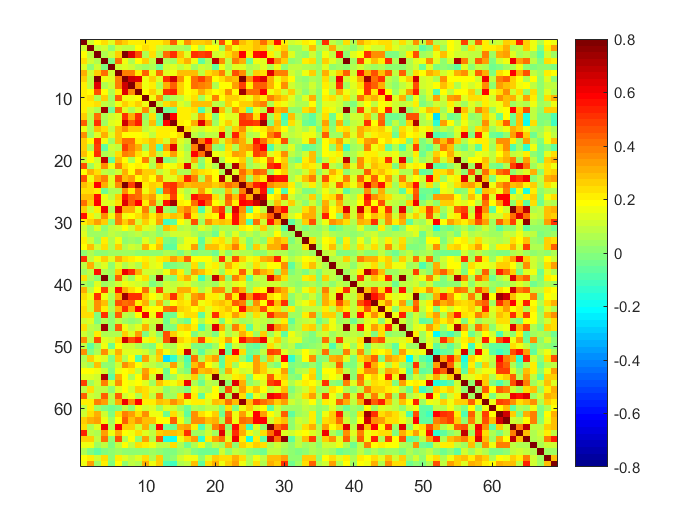
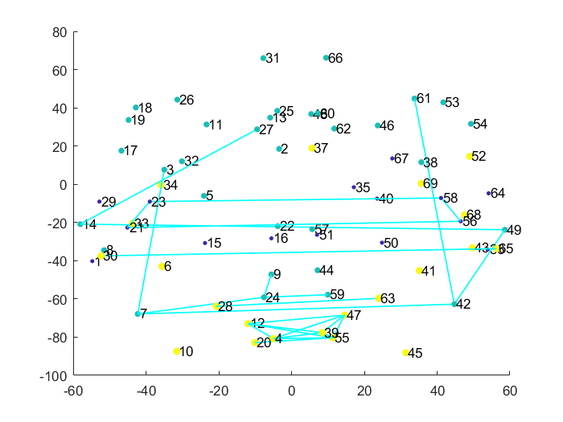
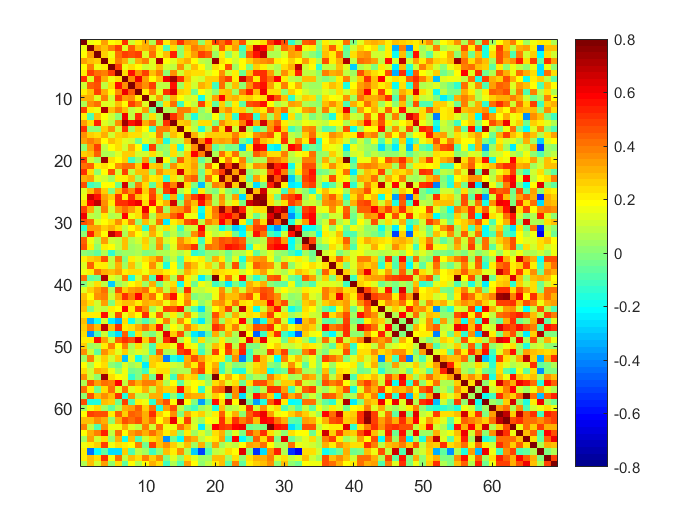
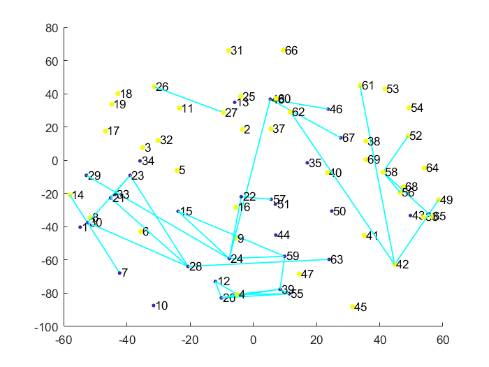

ROI time series extraction and FC analysis
Contents
Define (relative) filepaths
mot_file = '../data/hcp/tfMRI_MOTOR_LR.nii';
rest_file = '../data/hcp/rfMRI_REST1_LR_hp2000_clean.nii';
raparc_file = '../data/hcp/raparc+aseg.nii';
rest_fc_file = '../data/hcp/rest_fc_dat.mat';
mot_fc_file = '../data/hcp/mot_fc_dat.mat';
spm_dir = '../code/spm12/spm12';
bct_dir = '../code/BCT';
Say what to do
compute_mot_fc = 0;
compute_rest_fc = 0;
plot_mot_data = 1;
plot_rest_data = 1;
Add toolbox folders
addpath(spm_dir)
addpath(genpath(bct_dir))
Load parcellation labels
raparc_vol = spm_vol(raparc_file);
[raparc_dat,raparc_xyz] = spm_read_vols(raparc_vol);
Get unique label values
uns = unique(raparc_dat);
uns = uns(45:end);
Compute parcel centre of masses
for u = 1:length(uns)
idx = find(raparc_dat==uns(u));
com = mean(raparc_xyz(:,idx),2);
raparc_coms(:,u) = com;
end
Compute Motor task FC
if compute_mot_fc == 1;
mot_vol = spm_vol(mot_file);
[mot_dat,mot_xyz] = spm_read_vols(mot_vol);
clear meants_all;
for u = 1:length(uns) ;
voxinds = find(raparc_dat==uns(u));
meants = zeros(1,size(mot_dat,4));
for v = 1:length(voxinds);
[vi,vj,vk] = ind2sub(size(raparc_dat),voxinds(v));
newdat = squeeze(mot_dat(vi,vj,vk, :))';
newdat(find(isnan(newdat))) = 0;
meants = meants+newdat;
end
meants = meants / length(voxinds);
meants_all(u,:) = meants;
end
mot_meants_all = meants_all;
mot_meants_corrs = corrcoef(mot_meants_all');
save(mot_fc_file, 'mot_meants_all', 'mot_meants_corrs');
end
Compute rest FC
if compute_rest_fc == 1;
rest_vol = spm_vol(rest_file);
[rest_dat,rest_xyz] = spm_read_vols(rest_vol);
clear meants_all;
for u = 1:length(uns) ;
voxinds = find(raparc_dat==uns(u));
meants = zeros(1,size(rest_dat,4));
for v = 1:length(voxinds);
[vi,vj,vk] = ind2sub(size(raparc_dat),voxinds(v));
newdat = squeeze(rest_dat(vi,vj,vk, :))';
newdat(find(isnan(newdat))) = 0;
meants = meants+newdat;
end
meants = meants / length(voxinds);
meants_all(u,:) = meants;
end
rest_meants_all = meants_all;
rest_meants_corrs = corrcoef(rest_meants_all');
save(rest_fc_file, 'rest_meants_all', 'rest_meants_corrs');
end
close all
if plot_rest_data == 1
load(rest_fc_file);
figure;
imagesc(rest_meants_corrs);
colormap jet
caxis([-0.8,0.8])
colorbar
gamma = 1;
[rest_Ci,rest_Q] = modularity_und(rest_meants_corrs,gamma);
figure;
mat = abs(rest_meants_corrs>0.7);
jg_figure_graph_color(mat, raparc_coms',rest_Ci,1,1,1)
end
if plot_mot_data == 1
load(mot_fc_file);
figure;
imagesc(mot_meants_corrs);
colormap jet
caxis([-0.8,0.8])
colorbar
gamma = 1;
[mot_Ci,mot_Q] = modularity_und(mot_meants_corrs,gamma);
figure;
mat = abs(mot_meants_corrs>0.7);
jg_figure_graph_color(mat, raparc_coms',mot_Ci,1,1,1)
end
   